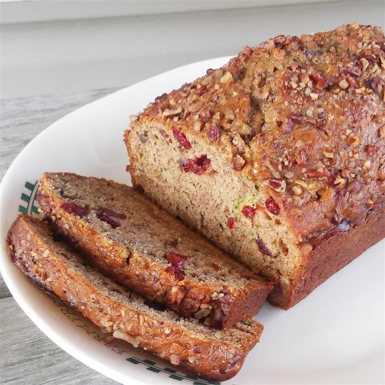

Banana Zucchini Bread recipe

Photos of Banana Zucchini Bread recipe
This banana zucchini bread is moist and subtly sweet. Plus, it's a great way to sneak healthy ingredients into a kid-pleasing treat!
Ingredients
- Eggs: Three eggs add moisture and help hold the batter together.
- Oil: A neutral oil, such as vegetable oil, lends even more moisture.
- Sugars: This banana zucchini bread recipe calls for both brown and white sugars.
- Zucchini and bananas: You'll need grated zucchini and mashed ripe bananas!
- Vanilla: Vanilla extract enhances the overall flavor of this simple quick bread.
- Flour: All-purpose flour gives the banana zucchini bread structure.
- Cinnamon: Ground cinnamon lends welcome pleasant warmth.
- Leaveners: Baking soda and baking powder act as leaveners, which means they help the bread rise.
- Salt: A pinch of salt enhances the overall flavor, but it won't make your bread taste salty.
- Cranberries: Dried cranberries are optional but they give the bread bursts of fruity flavor.
- Walnuts: Chopped walnuts are optional but they add crunch and nutty flavor.
Steps
- Beat the eggs, then beat in the wet ingredients.
- Stir in the dry ingredients, then fold in the cranberries and nuts if using.
- Pour the batter into prepared pans and bake until a toothpick comes out clean.
Home